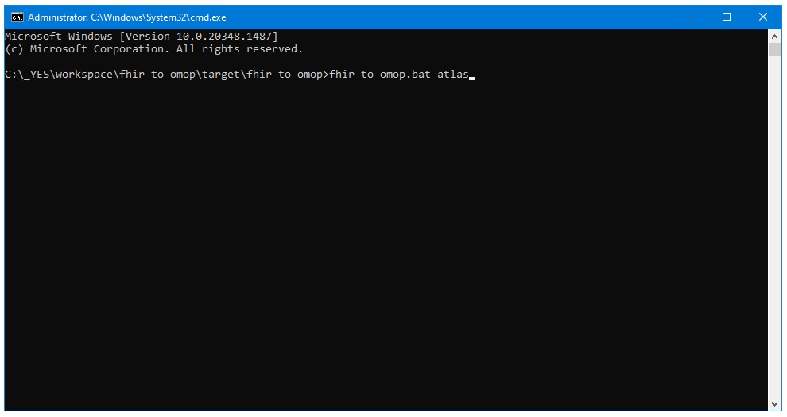

Ponos Quick Start Guide: Install Atlas Dependencies Using fhir-to-omop atlas
Download and Run the install-atlas-projects.bat Tool
The fhir-to-omop tool was created in the initial step of this process.
To run this tool, navigate to:
C:\_YES\workspace\fhir-to-omop\target\fhir-to-omop
Run the batch file there from a cmd prompt using the "atlas" option:
fhir-to-omop.bat atlas
